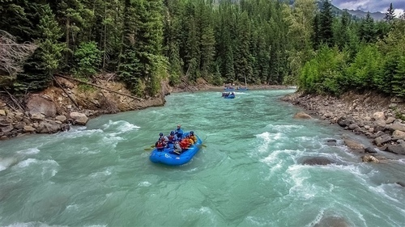
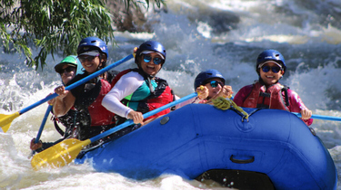
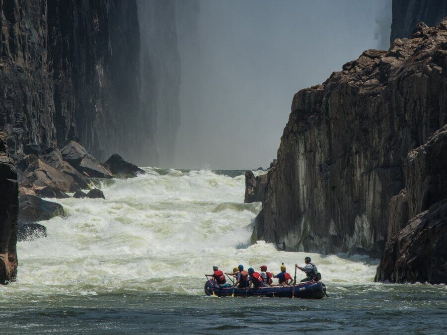
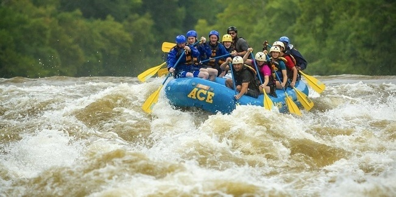
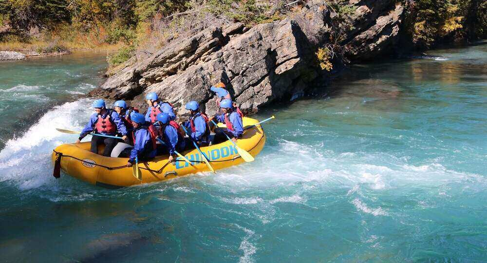
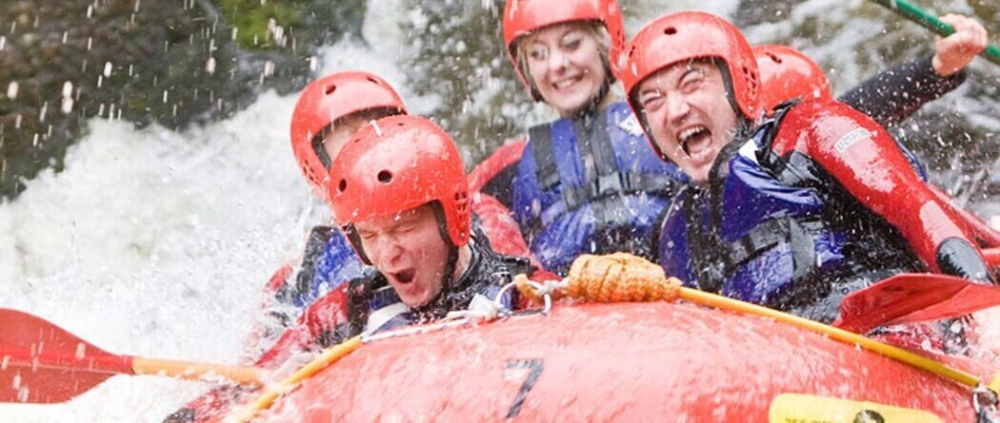
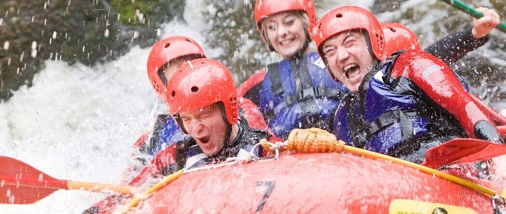

At Rapid Waters, our purpose is to inspire a love for the outdoors and foster a spirit of adventure through unforgettable rafting experiences. We are committed to providing safe, exhilarating, and environmentally responsible river excursions that connect adventurers of all ages with nature's beauty, promote teamwork, and create lasting memories.


Rapid Waters
History
Rapid Waters was founded in 2025 by a group of avid adventurers who shared a passion for the great outdoors and a love for white-water rafting. Beginning with just a handful of inflatable rafts and a vision, they offered guided trips down the scenic rivers of Bolivia.
Adventure Awaits You!
   
